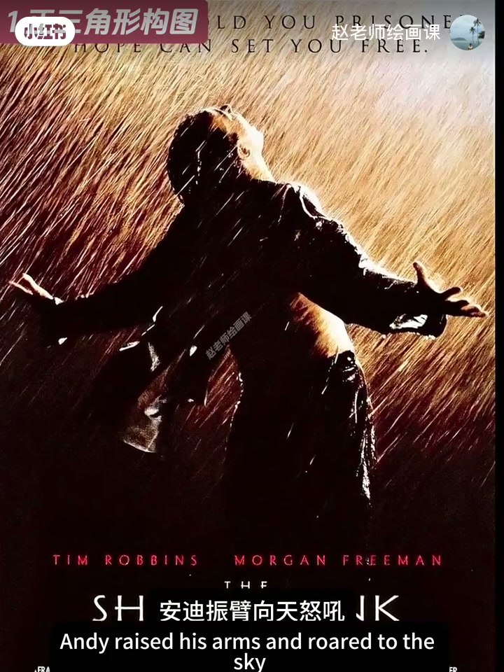
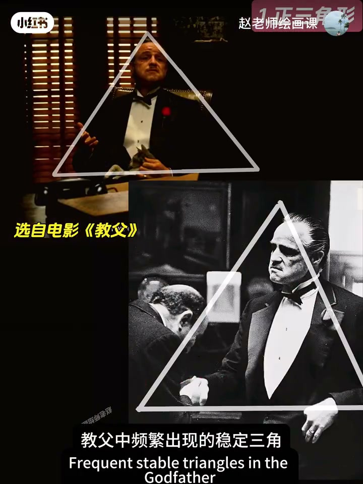
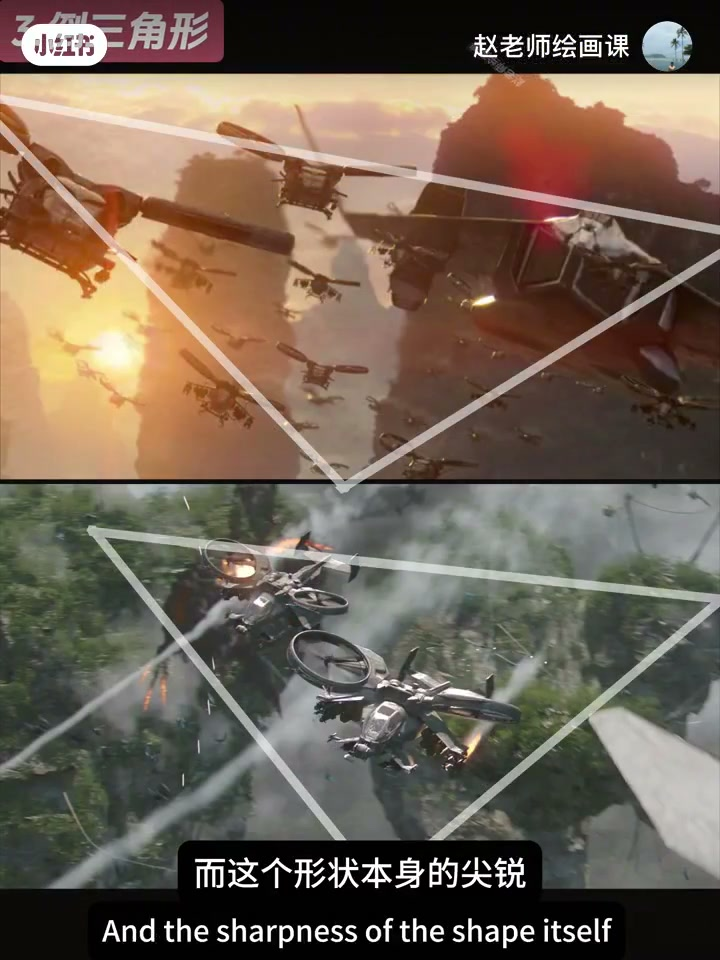
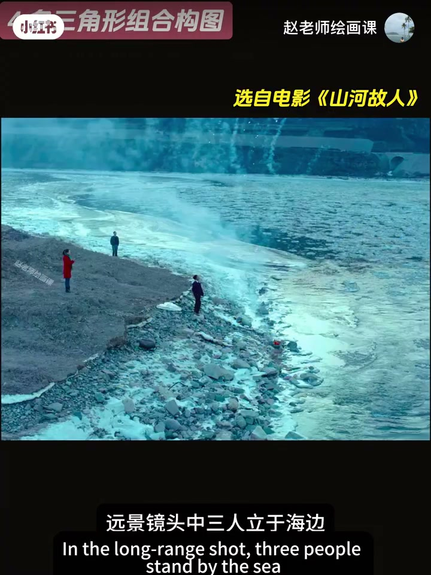

内容要点
赵吾象用经典电影镜头拆四种三角：正三角稳固底座可表救赎向上（《肖申克》）也可表权力威严（《教父》、华妃展肘加宽底座）；斜三角不稳定，映射负担与风雨飘摇；倒三角尖锐下指如悬剑（《阿凡达》编队），也可造梦境失衡（《盗梦空间》）；多三角嵌套更复杂微妙（《山河故人》海边三人）。练法：多分析范例，在画面里找能构三角的线索并匹配主题意境。部分片名／人名 ASR 已按通识校正。
知识结构
稳核／向上救赎；亦可权力威严。
斜＝不稳焦虑；倒＝压迫或失衡。
多三角嵌套复杂语义；范例+线索练习。
三角不是贴形状，而是选稳、不稳还是压迫的几何语义，再让线索为主题服务。
00:00-01:12正三角：稳固、救赎与权力
顶级画面秘密常在几何。《肖申克的救赎》暴雨中安迪振臂：正三角稳固底座隐喻坚毅内核；视线自下而上对应从爬行到挺立，向上动势把冲破黑暗的精神放大。
正三角也能表权力：教父中稳定三角；《甄嬛传》华妃尽量展肘加宽底座，让权力看起来更牢。00:18／00:55。


01:12-02:27斜三角不稳；倒三角压迫
斜三角：男主前倾脚踏凳腿居顶点却木讷，暗示负担；另一人缩在底边显弱势，两人斜三角像随时坍塌，强化生存焦虑。
倒三角：《阿凡达》人类战机编队成巨大倒三角，尖锐下指如悬剑，压迫潘多拉；《盗梦空间》人物与墙成动态倒三角，重力翻转制造失衡与荒诞。01:55。

02:27-03:32多三角组合与练习法
《山河故人》海边远景三人淹没在陆海之间，嵌套三角关系拷问时代命运与精神漂泊——多三角更容易表达微妙复杂感受。02:35。
怎么用：多分析优秀范例提升审美；再找能构成三角的重要线索，匹配适合主题的图形意境。

完整转录（91段）
以下文本由 Whisper medium 模型自动转录，可能存在少量识别误差，已尽可能修正。
为什么顶级的画面总是耐人寻味
原来秘密藏在几何形状里
今天我们用几部经典电影镜头
让你彻底搞懂三角形构图
在电影《萧生客的救赎》中
有这样经典一幕
暴雨如注
安迪振臂向天怒吼
这是自由的土藤自破黑暗
是自我生命的终极救赎
首先
这来自三角形稳固的基地
隐喻了安迪坚毅
专注勇敢的稳定内核
其次
三角形引导观众视线
自下而上移动
对应安迪从压迫的不服爬行
到雨中傲然挺立
这种向上的动势
将冲破黑暗
追求光明的精神
无限生化
当然
正三角形构图也能表现权力或威严
比如教父中
频繁出现的稳定三角
结合人物表情位置的安排
象征着权力的不可动摇
《征环传》中的华菲
尽可能地展开双肘
形成一个更宽大底座的正三角形
让自己的权力看起来更牢固
与之不同的是第二种
斜三角
电影引入沉烟中
男主角麻油铁身体前倾
脚踏着凳腿位于三角形顶点
占据高位却表情木讷
暗示着沉重的负担与压抑
曹桂英全缩在三角形底边
身形渺小
映射了弱势与边缘
两人构成的斜三角
仿佛随时可能坍塌
隐喻着他们风雨飘摇的生存状态
不稳定感
强化了生存焦虑
第三种
倒三角形的构图
在《阿凡达》中
人类战机编队形成了一个巨大倒三角形
而这个形状本身的尖锐
向下的指向性
就像一柄悬在头顶的利剑
直指下方的大地
在视觉上营造出一种强烈的压迫感和威胁感
象征着人类军事力量
对潘多拉星球及其原住民的绝对压制
在《道梦空间》中
人物与墙壁形成的动态倒三角
重力方向翻转
制造了一种视觉失衡的状态
强化了梦境的假象与荒诞
第四
多三角形组合构图
电影《山河故人》中
远景镜头中
三人立于海边
大面积的陆底和海
让三人淹没在辽阔的天地之间
画面中形成嵌套三角形关系
是导演对人的时代命运的拷问
及精神漂泊的绝妙表达
多三角形组合更容易表现出
一种微妙且复杂的视觉感受
好了
以上四种三角形构图的特点和作用
我给大家总结好了
那怎么才能学会使用三角形构图呢?
我想多分析减少优秀的构图范例
提升审美永远是索体
其次
试着去找画面那些能够构成三角形的重要线索
利用他们匹配出适合画面主题的图形意境
好了
以上就是今天关于三角形构图的全部内容
关注我的系统课
让你的构图能力与审美水平双提升
下期见咯
拜拜